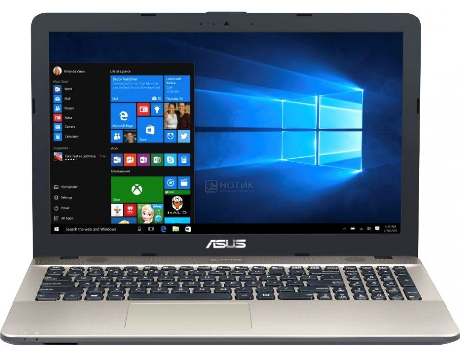

ASUS
Ноутбук ASUS X540YA-XO534D, 90NB0CN1-M09290

Краткая информация о товаре
Asus X540YA-XO534D на базе процессора AMD E-Series - универсальная 15.6 - дюймовая модель. Международная гарантия на ноутбук Asus X540YA составляет 1 год, обслуживание производится в авторизованных сервисных центрах производителя. Благодаря дружелюбной цене, производительной видеокарте AMD Radeon R2 series, 2 Гб оперативной памяти, оснащенный всеми необходимыми портами, качественно собранный, полноразмерный ноутбук Asus X540YA-XO534D прекрасно подойдет в качестве рабочего компьютера для офиса. Прекрасное соотношение цены, качества и сбалансированных технических характеристик, делают ноутбуки Asus одним из мировых лидеров в области инноваций и информационных технологий.
Характеристики ноутбука
- Процессор: AMD E-Series E1-6010 (Beema) 1.35 ГГц
- Количество ядер: 2
- Кэш-память: 1 МБ
- Оперативная память: 2 ГБ DDR3-1600 МГц
- Экран: 15.6" TN (LED) Матовый
- Разрешение: 1366x768 WXGA
- Видеокарта: AMD Radeon R2 series, 64 МБ
- Звук: SonicMaster
- Накопитель: 500 ГБ HDD (5400 об/мин.), Тип накопителя: HDD
- Связь: LAN 10/100
- Беспроводная связь: Bluetooth 4.0, WiFi (802.11 b/g/n)
- Порты: 1 x USB 2.0, 1 x USB 3.0, 1 x USB Type-C, Kensington security, Line-out, Mic-in, HDMI, VGA
- Слоты расширения: Картридер SD/SDHC/SDXC
- Дополнительные устройства: Камера 0.3 Мп
- Устройства ввода: Клавиатура Windows, Тачпад
- Цвет: Черный
- Цвет клавиатуры: Черный
- Материал корпуса: Пластик
- Материал крышки: Пластик
- Размеры корпуса: 38.1 x 25.2 x 2.7 см
- Вес: 2.000 кг
- Батарея: Литий-ионная, емкость - 2600 мАч (до 5 ч)
- Операционная система: Free DOS